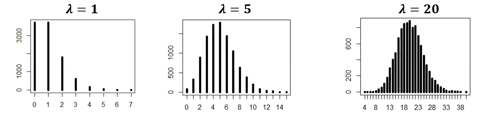
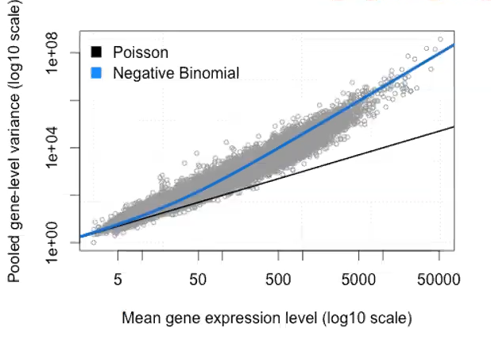

S8_1_GLM_Poisson
1 Plan du cours
Introduction : données de comptage, données longtiduinales, données en cluster
Modèles de Poisson pour les données de comptage
Loi de Poisson
Interprétation des coefficients
Cas des données sur-dispersées (variance > moyenne)
2 Introduction : données de comptage, données longtiduinales, données en cluster
2.1 Données de comptage
Les données de comptage sont des données qui représentent le nombre d’occurrences d’un événement dans un intervalle de temps ou d’espace donné.
Variable aléatoire discrète
Valeur dans les entiers naturels positifs (0, 1, 2, …)
Exemples : nombre de visites à l’hôpital, nombre d’accidents de la route, nombre de naissances, etc.
Ordre de grandeur des comptages
Souvent, les comptages sont de taille modérée (par exemple, de 0 à quelques dizaines).
Cependant, ils peuvent aussi être très élevés dans certains contextes (par exemple, le nombre de visiteurs sur un site web).
Caractéristiques des données de comptage
Beaucoup de zéros (événements rares)
Pas d’unité ! : les comptages sont des nombres absolus
Distribution asymétrique : la distribution est souvent biaisée à droite (peu de grandes valeurs)
Non normale : les données de comptage ne suivent pas une distribution normale
Relation moyenne-variance : dans une distribution de Poisson, la variance est souvent égale voire supérieure à la moyenne (sur-dispersion)
On peut comparer les deux car pas d’unité
Lien avec la distribution de Poisson
La distribution de Poisson est souvent utilisée pour modéliser les données de comptage.
Elle est caractérisée par un paramètre \(\lambda\) qui représente à la fois la moyenne et la variance des comptages.
\(\lambda\) correspond au taux moyen d’occurrence de l’événement par unité de temps ou d’espace.
Notion d’exposition
Dans certains cas, les données de comptage sont associées à une notion d’exposition, c’est-à-dire la durée ou la surface pendant laquelle les événements peuvent se produire.
Par exemple, le nombre d’accidents de la route peut être rapporté au nombre de kilomètres parcourus.
L’exposition est souvent utilisée comme un offset dans les modèles de régression pour ajuster les comptages en fonction de la durée ou de la surface d’observation.
Loi de Poisson
Paramètre \(\lambda > 0\) (ne peut pas être négatif)
Espérance : \(\mathbb{E}(X) = \lambda\)
Variance : \(\mathrm{Var}(X) = \lambda\)
= distribution de probabilité discrète
décrivant le nombre d’événements se produisant dans un intervalle de temps ou d’espace fixe,
lorsque ces événements se produisent avec une moyenne constante et indépendamment du temps écoulé depuis le dernier événement.
\(P(X = k) = \frac{\lambda^k}{k!} \times e^{-\lambda}\), pour \(k = 0, 1, 2, ...\)
2.1.1 Exemple de données de comptage
10 000 tirages d’une variable aléatoire
avec loi de Poisson de paramètre \(\lambda = 1\) (donc moyenne et variance égales à 1)
avec loi de Poisson de paramètre \(\lambda = 5\) (donc moyenne et variance égales à 5)
avec loi de Poisson de paramètre \(\lambda = 20\) (donc moyenne et variance égales à 20)

Plus le paramètre \(\lambda\) est grand, plus la distribution ressemble à une distribution normale.
Pour \(\lambda = 1\) ou \(5\), la distribution est asymétrique et concentrée sur les petites valeurs.
Donc cette loi a moins d’intérêt pour des comptages élevés.
2.1.2 Approximation binomiale / Poisson
Loi binomiale \(\mathfrak{B}(n, p)\) = nombre de succès dans n essais indépendants, avec probabilité p de succès à chaque essai.
- Exemple : nombre d’appels au SAMU dans une journée parmi 10 000 habitants, avec une probabilité p d’appel faible.
Démarche de modélisation :
La ville contient un nombre \(n\) d’habitants (très grand)
Chaque habitant a une probabilité \(p\) (très petite) d’appeler le SAMU dans la journée
Les appels surviennent de manière indépendante entre les habitants
Le nombre total d’appels \(X\) suit une loi binomiale \(B(n, p)\), d’espérance \(\lambda = n \times p\)

En augmentant \(n\) et en diminuant \(p\) de manière à ce que le produit \(n \times p\) reste constant, la loi binomiale \(\mathfrak{B}(n, p)\) se rapproche de la loi de Poisson (de paramètre \(\lambda = n \times p\)).
2.1.3 Surdispersion

Exemple : données de transcriptomique Bowtie
Chaque gène a un niveau d’expression (entier positif) sur chaque échantillon
On représente, pour chaque gène, la variance en fonction de la moyenne
Sous l’hypothèse d’une loi de Poisson, les points devraient tomber proche de la diagonale \(y = x\)
Or : ce n’est pas la cas !
Il faut donc une loi plus générale (ex. loi binomiale négative) pour modéliser ces données.
2.1.4 Excès de 0

Exemple : nombre d’épisode de migraine durant la dernière année
Les nons malades n’ont pas d’épisode (0) = zéros “structurels” ;
Les malades peuvent aussi ne pas avoir d’épisode = zéros “aléatoires”, mais aussi 1, 2, …
Il en résulte un excès de 0 par rapport à une distribution “standard”
Solution : un modèle de mélange (on modélise à part les “faux” 0 : “zero-inflated model”)
1ère partie du modèle estime la probabilité d’être toujours à 0 (par exemple “non malade”) ;
2nde partie du modèle estime le comptage conditionnel (0, 1, 2, …) chez les individus susceptibles d’avoir des événements (par exemple les malades), souvent avec une Poisson ou une binomiale négative.
Ce type de modèle permet de mieux tenir compte de la structure des données et d’obtenir des estimations plus réalistes des effets des covariables.
3 Modèle de poisson
3.1 Modèle
On observe
une réponse Y de type comptage (0, 1, 2, …)
des covariables explicatives X1, X2, …, Xp, dont on souhaite examiner l’association avec la moyenne de Y.
On modélise le paramètre \(\lambda\) de la loi de Poisson (moyenne et variance de Y) via une fonction de lien exponentielle :
\(Y \sim Poisson(\lambda) \\\)
\(\lambda = \mathbb{E}(Y|X) = exp(\beta_0 + \beta_1 X_1 + \beta_2 X_2 + ... + \beta_p X_p)\)
Donc \(\lambda\) est l’exponentielle d’un prédicteur linéaire = fonction log
Le lien assure que \(\lambda\) est toujours positif.
C’est différent d’une régression logistique où la moyenne est un “expit” du prédicteur linéaire (donc fonction logit inverse)
Modèle linéaire : suppose que chaque variable explicative a un effet additif sur la moyenne de la variable réponse, avec une relation linéaire directe.
Linéaire = proportionnel et additif : chaque variable explicative influence la moyenne de la variable réponse de manière proportionnelle à son coefficient.
Additif car les effets des différentes variables explicatives s’additionnent pour déterminer la moyenne de la variable réponse.
Liens en régressions = fonction de lien = façon de transformer la variable qu’on veut expliquer en quelque chose qu’on peut modéliser linéairement.
La fonction de lien doit être adaptée à la variable
Exprimer une probabilité p (entre 0 et 1) : on la transforme entre -infini et +infini avec la fonction logit ou probit
logit : fonctionne en faisant le logarithme du rapport entre la probabilité d’un événement et la probabilité de son complément (1 - p)
probit : utilise la fonction normale cumulative inverse pour transformer la probabilité en une valeur sur l’axe des réels.
on prend une probabilité p
on trouve la valeur x telle que la probabilité d’obtenir une valeur ≤ à x dans une distribution normale standard soit égale à p.
Cela permet de modéliser des données binaires en utilisant une approche basée sur la distribution normale.
Exprimer une moyenne μ positive (comptage) : on la transforme entre 0 et +infini avec la fonction log
Régression linéaire : moyenne est égale au prédicteur linéaire \[ \mathbb{E}(Y|X) = \beta_0 + \beta_1 X_1 + \beta_2 X_2 + ... + \beta_p X_p \]
Régression logistique : moyenne est une fonction “expit” du prédicteur linéaire \[ \mathbb{E}(Y|X) = \frac{exp(\beta_0 + \beta_1 X_1 + \beta_2 X_2 + ... + \beta_p X_p)}{1 + exp(\beta_0 + \beta_1 X_1 + \beta_2 X_2 + ... + \beta_p X_p)} \]
Régression de Poisson : moyenne est une fonction exponentielle du prédicteur linéaire \[ \mathbb{E}(Y|X) = exp(\beta_0 + \beta_1 X_1 + \beta_2 X_2 + ... + \beta_p X_p) \]
3.2 Interprétation des coefficients
- Si la variable X est binaire
\(\lambda_0 = \mathbb{E}(Y\|X=0) = exp(\beta_0)\)
\(\lambda_1 = \mathbb{E}(Y\|X=1) = exp(\beta_0 + \beta_1) = exp(\beta_0) \times exp(\beta_1)\)
Donc le ratio des moyennes est
\(\frac{\lambda_1}{\lambda_0} = \frac{\mathbb{E}(Y\|X=1)}{\mathbb{E}(Y\|X=0)} = \frac{exp(\beta_0 + \beta_1)}{exp(\beta_0)} = exp(\beta_1)\)
Le coefficient s’inteprète comme un log d’un risque relatif, c’est à dire le logarithme du ratio des moyennes entre les deux groupes.
Si la variable X est catégorielle
On choisit une catégorie de référence (par exemple la première catégorie)
Comme das les autres modèles linéaires ou GLM
Chaque coefficient \(\beta_k\) correspond au log du ratio des moyennes entre la catégorie k et la catégorie de référence.
Si la variable X est continue
- \(\exp(\beta_1)\) correspond au RR associé à une augmentation de 1 unité de X.
Dans un modèle multivariable, l’hypothèse est un effet additif des variables explicatives sur le \(\log(\lambda)\), donc un effet multiplicatif sur \(\lambda\).